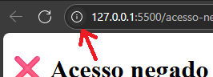
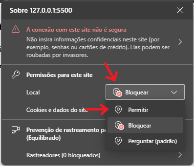

Você precisa permitir o uso da localização para acessar este sistema.
1. Para continuar, clique no ícone a seguir em seu navegador:

2. Depois, clique na caixa de seleção e selecione a opção "permitir"

3. Por fim, clique no botão abaixo para retornar à tela de login:
Retornar à tela de login